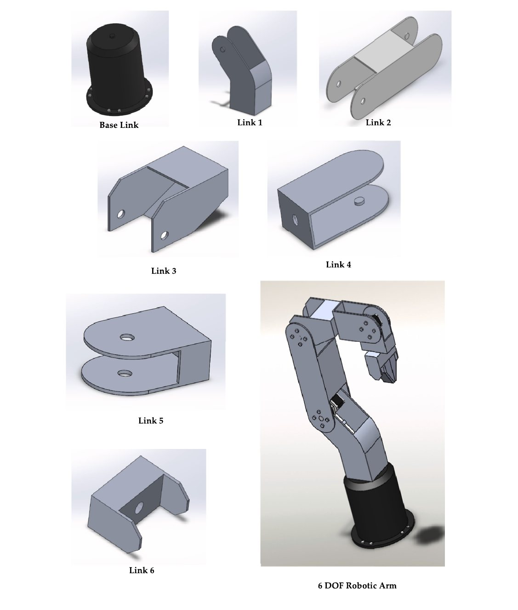
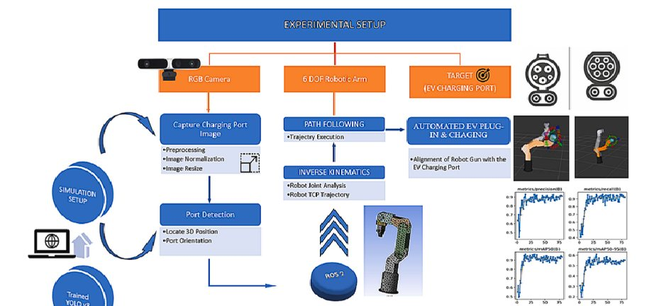
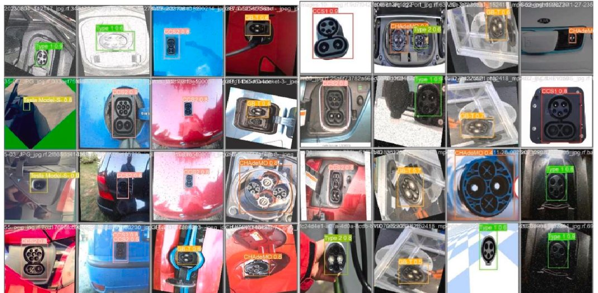
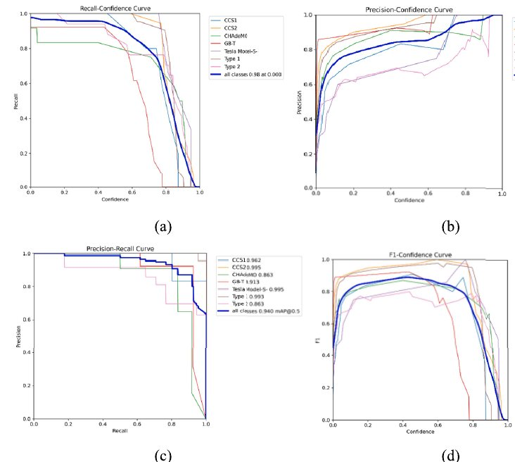
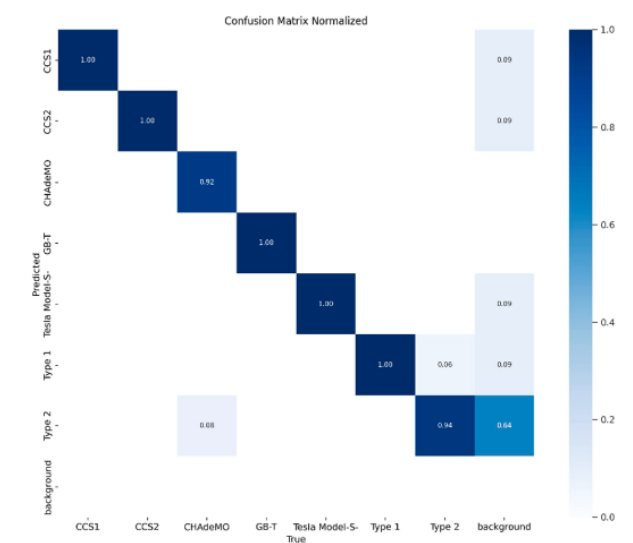
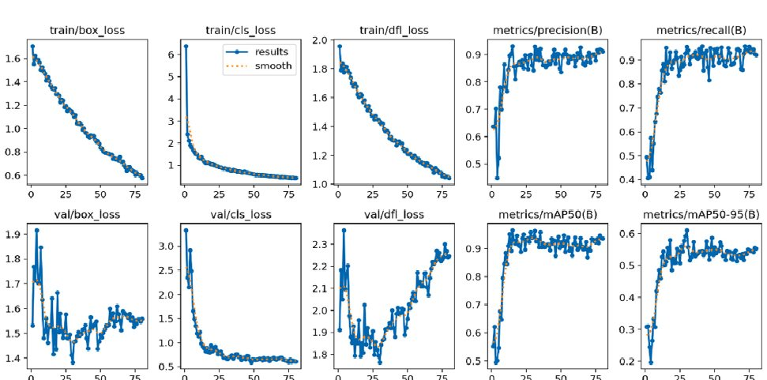
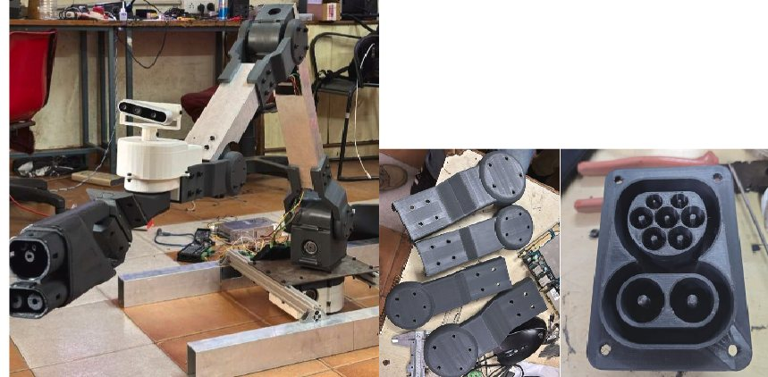

OverviewCharging without a human hand
EV charging still needs a person to park precisely, lift a heavy cable, pick the right plug and push it home. PlugPal, an autonomous charging robot arm (ACRA), removes that step. A camera finds the port, YOLOv8 tells which standard it is, and a six-axis arm moves the connector into it.
The work covers the whole chain: CAD design, finite element and dynamic analysis to size every link and motor, a ROS 2 digital twin with MoveIt motion planning, a YOLOv8 port detector, and a fabricated prototype. It was funded by the SIIEC – NewGen IEDC programme of NSTEDB, Government of India, and published in Results in Engineering.
PROBLEMManual charging today
- Drivers must park accurately and handle heavy cables.
- Port positions differ: front, rear, left, right or centre.
- Several connector standards coexist (CCS1, CCS2, CHAdeMO, GB/T, Type 1, Type 2, Tesla).
- Most commercial robots work with one plug type at a fixed spot.
APPROACHPlugPal’s answer
- Vision finds and classifies the port, whatever the car.
- A six-axis arm with a plug gripper reaches it.
- ROS 2 and MoveIt plan collision-free paths with inverse kinematics.
- Real-time battery monitoring and safety interlocks.
Mechanical designEngineering the arm
The arm is a serial manipulator with six revolute joints, modelled on the human arm: base, shoulder, elbow and wrist links ending in a plug gripper. It was modelled part by part in SolidWorks and then assembled. To reduce the load on each joint, the joints are driven by paired servo motors.

| Specification | Value |
|---|---|
| Axes | 6, all independent and controllable at the same time |
| Payload | 0.5 – 2.6 kg |
| Reach | 750 mm horizontal, 1350 mm vertical |
| Drives (design) | 1 × 150 kg·cm, 4 × 80 kg·cm, 3 × 35 kg·cm servos |
| Link lengths | Base 250, L1 300, L2 350, L3 200, L4 150, L5 100, L6 100 mm |
| End effector | Plug gripper |
Simulation and validationProving it will hold
Finite element analysis
IGES models were meshed in ANSYS Workbench and loaded link by link, comparing structural steel with aluminium alloy for deformation and stress.
Multi-body dynamics
A 26-second motion took the arm to full reach and back with a 2.5 kg payload, logging the directional and total force at every joint.
Payload and gravity study
Joint moments were compared for payloads from 0 to 2.6 kg and with and without standard gravity; joint 2 carries the highest moment.
Hand calculation
Static torque equations for all six joints validated the simulation and fixed the motor sizes.
Vibration check
Natural frequency, damping ratio and Rayleigh damping were worked out to keep the arm stable at speed.
| Joint | Link length (m) | Link mass (kg) | Torque at 2.6 kg payload (N·m) |
|---|---|---|---|
| Joint 1 | 0.30 | 0.720 | 45.46 |
| Joint 2 | 0.35 | 0.844 | 30.97 |
| Joint 3 | 0.20 | 0.403 | 16.81 |
| Joint 4 | 0.15 | 0.310 | 9.96 |
| Joint 5 | 0.10 | 0.256 | 5.36 |
| Joint 6 | 0.10 | 0.156 | 2.58 |
Virtual controlA digital twin in ROS 2
A URDF generated from the meshes was extended with ros2_control and Gazebo plugins and spawned in RViz2 and Gazebo. Forward kinematics was tested from Python by sending known joint angles. Inverse kinematics uses the KDL solver, and MoveIt plans the motion; after trying several planners, RRT* was chosen and its planning time tuned for the digital twin. Different goal positions for the tool centre point were reached successfully in RViz.

YOLOv8 charging-port detectionFinding the right socket
Ultralytics YOLOv8 was trained to detect and classify seven connector types: CCS1, CCS2, CHAdeMO, GB/T, Tesla Model S, Type 1 and Type 2. Precision rose steadily after about the 25th epoch, and both the training and validation losses fell, showing the model was learning rather than memorising.
Recall per connector class. mAP50: CCS1 0.962, Type 1 0.993. F1: CCS2 0.969, CCS1 0.901.




Hardware prototypeFrom model to metal
- Frame: aluminium square channels, cut and shaped with an angle grinder, with no welding.
- 3D-printed parts: gearboxes, connecting links, end effector, camera mount and a charging-socket mock-up for vision tests.
- Actuation: four NEMA 17 steppers for the links and one NEMA 23 for base rotation, on DM542E micro-stepping drivers.
- Control: an Arduino talks to a ROS 2 Humble system over UART at 115200 baud and runs a real-time state machine.
- Power: a 24 V, 15 A industrial SMPS feeding all drivers.
- Safety: manual homing, an emergency stop, over-voltage, short-circuit and driver-fault protection, and ultrasonic sensors that slow the arm below 25 cm and stop it below 10 cm.

PublicationRead the full study
Integrated design and YOLO based control framework for autonomous EV charging robot platforms
V.C. Mahaadevan, Narayanamoorthi R, ShanmugamPillai Pushparaj Logeshwer, Harshit Jain, Sayantan Panda, Petr Moldrik, Tomas Novak, Radomir Gono
Results in Engineering 26 (2025) 105438 · Elsevier · open access · doi:10.1016/j.rineng.2025.105438